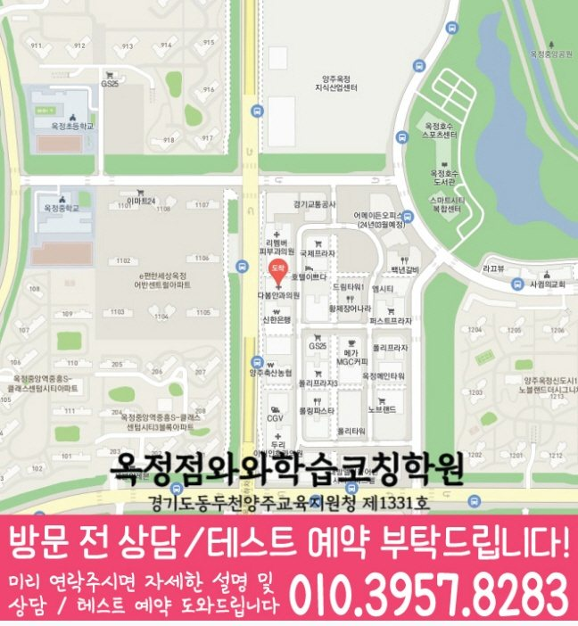

과목별 진단
영어, 수학, 국어 중 지금 어느 과목의 어떤 부분이 부족한지 먼저 나누어 확인합니다.
ALL-SUBJECT LEARNING COACHING
경기 양주시 옥정신도시 학생을 위한 와와학습코칭센터 안내입니다. 영어·수학·국어 학습 진단, 통합 플래너, 오답 재학습 기준을 상담 전에 확인할 수 있습니다.


와와학습코칭센터 옥정점 기준으로 옥정신도시 학생의 상담 범위를 확인합니다. 실제 방문·상담 전에는 주소와 이동 동선을 함께 확인해 주세요.
핵심 요약
옥정신도시 학생마다 강한 과목과 약한 과목이 다르기 때문에, 같은 학년이라도 먼저 봐야 할 과목의 순서는 달라질 수 있습니다.
영어, 수학, 국어 중 지금 어느 과목의 어떤 부분이 부족한지 먼저 나누어 확인합니다.
과목별 학습량을 한 플래너에 담아 서로 밀리지 않도록 조율하고 실행 여부를 확인합니다.
과목마다 다른 오답 원인을 분류하고, 비슷한 유형을 다시 풀며 반복 실수를 줄입니다.
학원 선택 가이드
숙제와 복습이 여러 과목에 걸쳐 쌓이면 아이가 정작 어디에 집중해야 할지 놓치기 쉽습니다. 과목별 우선순위를 정리해주는 과정이 필요한 이유입니다.
와와학습코칭센터 옥정점은 경기 양주시 옥정신도시 학생을 기준으로 상담을 진행하며, 인근 학교 학생들이 주로 문의합니다. 실제 등록 전에는 경기 양주시 옥정로 218 신운정튼튼프라자 305호 와와학습코칭학원을 기준으로 이동 동선과 상담 가능 시간을 확인하는 것이 좋습니다.
지금 당장의 점수보다, 과목마다 필요한 습관이 하나씩 자리 잡고 있는지를 함께 지켜봐 주시길 바랍니다.
AEO ANSWER
중학교 입학을 앞두고 무엇을 준비해야 하나요?
과목별 기초 개념을 점검하고, 스스로 시간을 계획하는 연습을 시작하기 좋은 시기입니다.
고등학교 진학 후 성적이 갑자기 떨어졌다면?
중학교와 다른 학습량과 평가 방식 때문일 수 있습니다. 과목별로 무엇이 부족한지 먼저 나누어 확인합니다.
학습관리와 성적 향상 중 무엇을 먼저 봐야 할까요?
성적은 결과이고 학습관리는 과정입니다. 과정이 자리 잡으면 성적은 자연스럽게 따라오는 경우가 많습니다.
여러 과목 숙제가 겹쳐서 아이가 힘들어한다면?
과목별 학습량과 우선순위를 조정해 부담을 나누는 것이 먼저입니다. 무조건 줄이기보다 순서를 정리하는 방식이 효과적입니다.
LOCAL & STUDENT FIT
옥정신도시 생활권 학생의 학교 진도와 시험 일정에 맞춰 전과목 관리 방향을 상담합니다.
학년별로 필요한 관리가 다르기 때문에 학습 습관, 내신, 진학 준비 시기를 나누어 봅니다.
여러 과목을 따로 관리받기 번거로운 학생, 형제자매가 함께 다닐 학생, 학습 습관부터 잡아야 하는 학생에게 적합합니다.
수업 가능 학교 참고
일반 학원과의 차이
일반적인 학원 운영 방식과 코칭아카데미의 통합 학습관리 방식을 같은 기준으로 비교했습니다.
CENTER INFO
경기 양주시 옥정신도시 학생 상담 기준으로 안내합니다.
경기 양주시 옥정로 218 신운정튼튼프라자 305호 와와학습코칭학원
경기도동두천양주교육지원청 제1331호
TUITION
서울 외 지역 기준으로 안내되는 학습료입니다. 실제 금액은 상담 시 학생 과정과 교육청 신고 기준에 따라 확인해 주세요.
서울 외 지역 기준 · 1회 90~100분 수업
| 횟수 | 초등 | 중등 | 고등 |
|---|---|---|---|
| 주 3회 | 219,000원 | 236,000원 | 269,000원 |
| 주 4회 | 279,000원 | 301,000원 | 344,000원 |
| 주 5회 | 339,000원 | 366,000원 | 419,000원 |
* 학습료는 지역, 수업 조건, 교육청 신고 기준에 따라 일부 차이가 있을 수 있습니다.
CHECKLIST
숙제, 복습, 자기주도학습 정도를 살펴봅니다.
이전에 다닌 학원이 있다면 진도와 방식을 확인합니다.
영어, 수학, 국어 중 지금 필요한 과목을 알려주세요.
전화, 방문 상담 중 편하신 방식을 말씀해주세요.
FAQ
학생 개개인에게 충분한 설명과 피드백이 갈 수 있는 인원으로 반을 운영합니다.
네, 독해 태도와 문제 접근 방식을 중심으로 국어도 함께 관리할 수 있습니다. 필요한 과목만 선택하셔도 괜찮습니다.
이전에 다닌 학원들의 진도와 자료를 확인한 뒤 지금 수준에 맞는 시작점을 다시 정리해드립니다.
공통 개념은 함께 배우되, 학생 수준에 따라 보충 자료나 심화 자료를 다르게 제공합니다.
기본 개념은 함께 배우되, 학교별 시험 범위에 맞춘 자료는 따로 준비합니다.
수업 방식과 규칙을 천천히 안내하고, 처음 적응하는 기간에는 특히 더 세심하게 살펴봅니다.
PARENT REVIEW
과목별로 무엇이 부족한지 구체적으로 설명해주셨습니다.
중학교 입학 전에 미리 준비할 수 있어서 좋았습니다.
선행보다 지금 필요한 것부터 챙겨주셔서 믿음이 갔습니다.
아이가 학원 가는 것을 부담스러워하지 않습니다.
학교마다 시험 범위가 다른데 그 부분까지 챙겨주셨습니다.
학부모 상담 때 과장 없이 솔직하게 말씀해주셔서 좋았습니다.
근처 학원페이지
같은 지역의 다른 과목과, 가까운 지역 페이지로 이동할 수 있도록 정리했습니다.